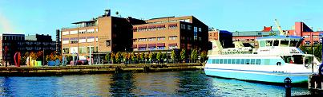
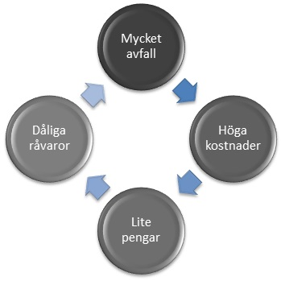
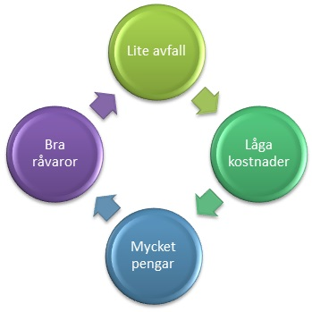
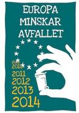

Minska Lindholmens Matsvinn
Välkommen till Lindholmens Matkampanj!

Nu håller Lindholmens Tekniska Gymnasium i en matsvinnskampanj. Vi vet att ni hört detta förut. Vi vet att ni tröttnat på allt tjat om matsvinn, men det betyder inte att man ska strunta i det.
Ju mindre mat du slänger, desto mindre vill du slänga!
Hur går detta till? Jo, om vi hjälps åt att minska matsvinnet behöver Bamba inte betala höga avgifter för matavfall. Detta gör att de kan omformera deras budget och lägga mer pengar på resurser, vilket kommer ge godare och bättre mat. Och då kommer du garanterat inte vilja slänga maten!
Vi kan tillsammans förbättra maten i Bamba, men det innebär att du måste bättra dig själv innan du klagar på att andra slänger mer. Du må vara en liten del av allt matsvinn, men att vänta på att andra ska förbättra sig fungerar inte. Du måste själv ta ansvar för ditt matsvinn.

Europa minskar avfallet
 ”Europa minskar avfallet” är ett EU-projekt som sedan 2009 pågått en vecka i november. Avfall Sverige är nationell samordnare. Under veckan anordnas aktiviteter runt om i hela EU. Inom projektet betonas vikten av att förebygga att avfall uppkommer och att minska halterna av farliga ämnen i avfallet. Genom aktiviteterna ska vi lära oss hur miljön påverkas av det vi slänger och vad var och en av oss kan göra för att minska avfallet.
Avfall Sverige
 Avfall Sverige är expertorganisationen inom avfallshantering och återvinning. Det är Avfall Sveriges medlemmar som ser till att avfall
tas om hand och återvinns i alla landets kommuner. De kämpar för att minska avfallet så mycket som möjligt, vi på Lindholmen stöttar deras arbete enom dennna matsvinnskampanj.
Avfall Sverige är expertorganisationen inom avfallshantering och återvinning. Det är Avfall Sveriges medlemmar som ser till att avfall
tas om hand och återvinns i alla landets kommuner. De kämpar för att minska avfallet så mycket som möjligt, vi på Lindholmen stöttar deras arbete enom dennna matsvinnskampanj.